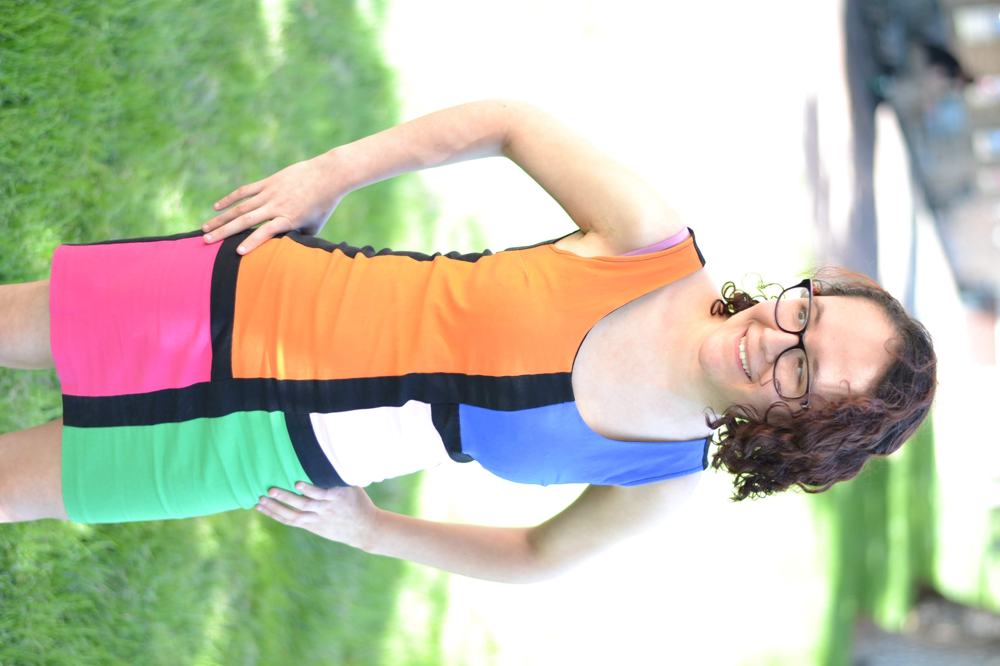

Home
About Me
Portfolio
Services
-
ABOUT ME

Hello, my name is Tanya. I have always been immersed with art and literature.
Ever since I was little, I have participated in the creation of art and literature, which
lends to my works and influences in the present-day. Throughout my college years, I had
absorbed an influence for the abstract as well as written elements for both my graphic
design and electronic works. My written works have become more concise and descriptive
through my college years.
I am a 30 year old woman who majored in Graphic Design and Electronic Art
with a minor in English at Colorado State University. During my senior year of college, I
traveled abroad to the small village of Stroke-on-Trent in England and made numerous
connections there. I studied abroad at Keele University in the United Kingdom where
I was in the center of a vibrant graphic design community. I benefitted from the presence
of this innovative community of designers in terms of an artistic gain and an work
experience. When I was apart of the program, it was an great opportunity for me to
expand my cultural understandings between various countries, especially between the U.S.
and U.K.. A few years later, I graduated from Denver University with a Masters in
Creative Writing. I was an recipient of the Gilman Scholarship as well as the
Fulbright Scholarship, which allowed me to expand my connections to reaches beyond my
belief.
I have both written samples as well as artworks on this site. My literary
works have been published through Simon & Schuster. I offer graphics production for
logos, posters, branding, etc., as well as services for editing manuscripts. Submission
for a request for my services can be found on my services page. I have worked with
clients from Denver all the way to Los Angeles and New York.